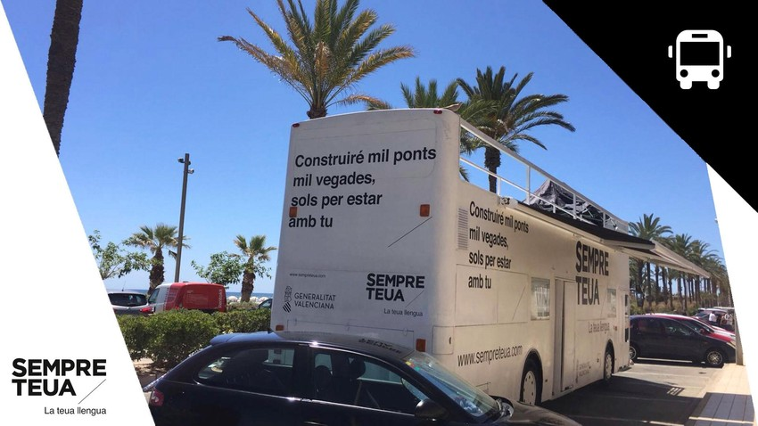

Las Ultimas Noticias
El bus de la llengua arriba a Riba-Roja

Els dies 3 i 4 de setembre arriba a Riba-roja el bus de la llengua, el vehicle per al foment del valencià que, dins de la campanya “sempre teua” de la Conselleria d'Educació, Investigació, Cultura i Esport, recorre els pobles de la Comunitat amb la finalitat de difondre l’ús del valencià entre els nostres ciutadans i ciutadanes.
Així, els dies 3 i 4 de setembre, en l’esplanada del CIJ (plaça Adolfo Suáez), el Bus de la Llengua presentarà activitats de foment del valencià, i material de difusió, entre tots aquells i aquelles que es personen entre les 10 i les 17 hores de la vesprada.
Aquesta campanya institucional té per objectiu la promoció social del valencià i està fonamentada en els principis que inspiren la política lingüística de la Generalitat, que aposta per la diversitat lingüística i la cohesió social com a valors bàsics per a l'assoliment de l'equitat lingüística.
Poden trobar-ne més informació sobre la campanya “Sempre teua” en http://www.sempreteua.gva.es/
VII Jornades Gastronomiques
De l'1 al 16 de setembre es duran a terme les VII Jornades Gastronòmiques de Riba-roja de Túria, organitzades per l'Ajuntament de Riba-roja de Túria i l'àrea de Turisme i Patrimonio. L'objectiu d'aquestes jornades és recuperar les tradicions gastronòmiques locals, posar en valor els productes gastronòmics de la zona, donar-los a conèixer i sobretot experimentar amb nous sabors. Com en edició anteriors, els protagonistes seran els productes de proximitat i, a més, enguany s'ha apostat per la Gastronomia Visigoda.
Riba-roja de Túria gaudeix d'una situació privilegiada; sent un dels pocs municipis que posseeix jaciments d'època visigoda, convertint-se en un emplaçament excepcional. Per aquesta raó, l'àrea de Turisme i Patrimoni promou i difon la cultura visigoda en tots els seus aspectes. A través d'aquestes Jornades Gastronòmiques se cerca recuperar receptes i productes propis de la Gastronomia Visigoda del segle VII.
Gràcies a la participació i interès dels restauradores del municipi, en aquestes jornades podrem degustar plats elaborats amb productes propis de les tradicions culinàries de la societat visigoda, així com del Menú Visigot al complet. En paral·lel amb aquest esdeveniment, els dies 7, 8 i 9 de setembre es realitzarà la II Gran Festa del Dux en el casc antic. D'aquesta forma, els visitants que assistisquen al Mercat Visigot, podran completar l'experiència acudint als restaurants que participen de les jornades, degustar el Menú Visigodo i així convertir-se en autèntics visigots per un dia. Sens dubte aquesta és una proposta més que interessant per a gaudir en família o amb amics, fer els vostres plans!
Enguany participen 4 restaurants, tots els menús inclouran entrants, plat principal i postres; tindran un cost de 22 € dels quals 2 € seran destinats a una causa solidària. En aquesta edició participaran els següents restaurants: Bar Restaurant Antonio, El Racó del Bon Gust, el Baret de Quique i Restaurant Masia de Traver.
El teu Comerç a un Click
La Regidoria de Comerç ha llançat una nova campanya denominada “EL TEU COMERÇ A UN CLICK”; en la qual podràs conéixer cada un dels comerços de Riba-roja dins del Portal del Comerciant. Una pàgina web de la Generalitat Valenciana on cada comerç del municipi actualitzarà, entre altres, les seues ofertes, horaris, productes i servicis.
En este portal de comerç local, els comerços estan dividits per categories, d'esta manera podràs trobar el comerç que estes buscant més facilment, així com els descomptes i ofertes que oferixen puntualment.
Actualment personal de l'Agència d'Ocupació i Desenvolupament Local de Riba-roja esta visitant tots els comerços per a explicar-los el funcionament d'esta plataforma i actualitzar les seues dades, així que puguen aconseguir major visibilitat del seu negoci a més de publicitar i promocionar ofertes de manera gratuïta.
Per a això hauràs d'entrar al portal del comerciant per mitjà d'este enllaç:
https://ribarrojaturia.portaldelcomerciante.com/
No hay mas noticias.